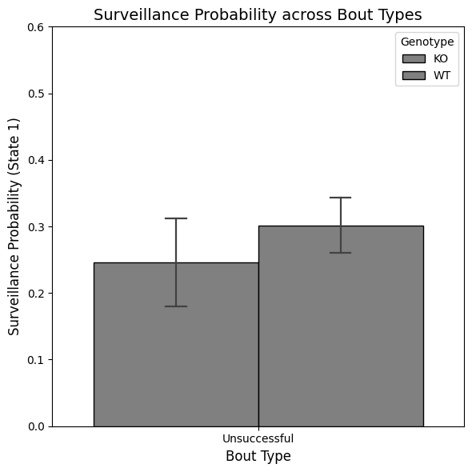

Table of Contents¶
- Load Project
- Plot 1: Heatmap Representations of HMM States
- Plot 2: Probability of Surveillance across Node Types and Regions
- Plot 3: Probability of States over Times
- Plot 4: Surveillance Probability by Bout Type
Load Project¶
from pathlib import Path
import pandas as pd
from compass_labyrinth import load_project
project_path = Path(".").resolve() / "my_project_2"
# Import config and metadata
config, cohort_metadata = load_project(project_path=project_path)
Load the HMM results¶
| ID | step | angle | x | y | Grid Number | likelihood | S_no | Region | Session | Genotype | Sex | NodeType | Velocity | HMM_State | Post_Prob_1 | Post_Prob_2 | |
|---|---|---|---|---|---|---|---|---|---|---|---|---|---|---|---|---|---|
| 0 | 3 | 3.912921 | -1.149582 | 267.526978 | 873.733704 | 47 | 0.986050 | 750 | entry_zone | 3 | WT | Female | Entry Nodes | 19.564603 | 1.0 | NaN | NaN |
| 1 | 3 | 1.981172 | 0.620240 | 265.571991 | 873.412659 | 47 | 0.953975 | 751 | entry_zone | 3 | WT | Female | Entry Nodes | 9.905860 | 1.0 | NaN | NaN |
| 2 | 3 | 1.066163 | -2.518697 | 266.325684 | 874.166748 | 47 | 0.958631 | 752 | entry_zone | 3 | WT | Female | Entry Nodes | 5.330815 | 1.0 | NaN | NaN |
| 3 | 3 | 0.899351 | 2.238799 | 265.432495 | 874.271851 | 47 | 0.932229 | 753 | entry_zone | 3 | WT | Female | Entry Nodes | 4.496755 | 1.0 | NaN | NaN |
| 4 | 3 | 0.519677 | 1.625876 | 265.400269 | 873.753174 | 47 | 0.909978 | 754 | entry_zone | 3 | WT | Female | Entry Nodes | 2.598385 | 1.0 | NaN | NaN |
| ... | ... | ... | ... | ... | ... | ... | ... | ... | ... | ... | ... | ... | ... | ... | ... | ... | ... |
| 265485 | 7 | 58.644322 | -0.866077 | 228.690262 | 814.897949 | 34 | 0.999385 | 225311 | reward_path | 7 | KO | Female | Non-Decision (Reward) | 293.221609 | 2.0 | NaN | NaN |
| 265486 | 7 | 67.785952 | 0.178698 | 292.517883 | 837.722717 | 46 | 0.999992 | 225312 | entry_zone | 7 | KO | Female | Entry Nodes | 338.929760 | 2.0 | NaN | NaN |
| 265487 | 7 | 24.729589 | 1.114421 | 295.305054 | 862.294739 | 47 | 0.999458 | 225313 | entry_zone | 7 | KO | Female | Entry Nodes | 123.647944 | 2.0 | NaN | NaN |
| 265488 | 7 | 14.627917 | 0.109074 | 295.361694 | 876.922546 | 47 | 0.999976 | 225314 | entry_zone | 7 | KO | Female | Entry Nodes | 73.139586 | 2.0 | NaN | NaN |
| 265489 | 7 | 24.111518 | 0.041934 | 294.444183 | 901.016602 | 47 | 0.962276 | 225315 | entry_zone | 7 | KO | Female | Entry Nodes | 120.557592 | 2.0 | NaN | NaN |
265490 rows × 17 columns
State Representation: Characteristics¶
- State 1 --> Low Step Length, High Turn Angle --> "Surveillance" state (Red)
- State 2 --> High Step Length, Low Turn Angle --> "Ambulatory" state (Blue)
Plot 1: Heatmap Representations of HMM States¶
This workflow visualizes the spatial distribution of HMM state proportions over a grid-mapped maze using heatmaps. It overlays key regions such as decision and target nodes for the specified genotype.
Recommended Use:¶
- Ensure
df_hmmcontains columns: 'Genotype', 'Grid.Number', 'HMM_State', 'x', and 'y'. - Set
genotype_nameto the genotype of interest (e.g., 'WT-WT'). - Set
grid_filenameto the corresponding shapefile for the session. - Use
compute_state_proportion()to calculate per-grid HMM state proportions. - Load the grid geometry using
create_grid_geodata(). - Use
map_points_to_grid()andsjoin()to align state estimates with grid polygons. - Merge state proportions back into the grid using
merge_state_proportions_to_grid(). - Plot the heatmap using
plot_grid_heatmap()and highlight decision/target regions.
from compass_labyrinth.post_hoc_analysis.level_1 import (
compute_state_proportion,
create_grid_geodata,
map_points_to_grid,
merge_state_proportions_to_grid,
plot_grid_heatmap,
)
genotype_name = 'WT'
grid_filename = "Session-3 grid.shp"
# Step 1: Compute HMM state proportions by grid
state_df = compute_state_proportion(
df=df_hmm,
genotype_name=genotype_name,
hmm_state=2,
)
# Step 2: Load session-specific grid geometry
grid = create_grid_geodata(
config=config,
grid_filename=grid_filename,
)
# Step 3: Map mean (x, y) points to grid polygons
pointInPolys = map_points_to_grid(state_df, grid)
# Step 4: Merge proportions with grid polygons
grid_mapped = merge_state_proportions_to_grid(grid, state_df)
# Step 5: Plot heatmap with overlays for Decision and Target zones
ax = plot_grid_heatmap(
config=config,
grid=grid_mapped,
genotype_name=genotype_name,
highlight_grids="decision_reward",
target_grids="target_zone",
)
print('Decision Nodes highlighted in BLACK')
print('Target Nodes highlighted in YELLOW')
Figure saved at: /Users/luiztauffer/Github/CoMPASS-Labyrinth/notebooks/my_project_2/figures/WT_grid_heatmap.png

Decision Nodes highlighted in BLACK
Target Nodes highlighted in YELLOW
Heatmap representations of all genotypes¶
from compass_labyrinth.post_hoc_analysis.level_1 import plot_all_genotype_heatmaps
plot_all_genotype_heatmaps(
config=config,
df_hmm=df_hmm,
grid_filename = grid_filename,
highlight_grids="decision_reward",
target_grids="target_zone",
hmm_state=2,
cmap='RdBu',
)
Figure saved at: /Users/luiztauffer/Github/CoMPASS-Labyrinth/notebooks/my_project_2/figures/all_genotypes_grid_heatmap.pdf

Interactive Heatmap version¶
from compass_labyrinth.post_hoc_analysis.level_1 import (
compute_state_proportion,
create_grid_geodata,
get_grid_centroids,
plot_interactive_heatmap,
overlay_trajectory_lines_plotly,
)
genotype_name = 'WT'
# 1. Compute state proportions
state_df = compute_state_proportion(df_hmm, genotype_name)
# 2. Load session-specific grid geometry
grid = create_grid_geodata(
config=config,
grid_filename=grid_filename,
)
# 3. Merge proportion values to grid
grid_mapped = merge_state_proportions_to_grid(grid, state_df)
# 4. Get grid centroids
grid_centroids = get_grid_centroids(grid_mapped)
# 5. Plot heatmap
fig = plot_interactive_heatmap(
config=config,
grid_mapped=grid_mapped,
genotype_name=genotype_name,
decision_grids="decision_reward",
target_grids="target_zone",
show_fig=False,
return_fig=True,
)
# 6. Overlay smooth trajectory lines
overlay_trajectory_lines_plotly(
fig=fig,
df_hmm=df_hmm,
genotype_name=genotype_name,
grid_centroids=grid_centroids,
top_percent=.1,
)
# 7. Show
fig.show()
Figure saved at: /Users/luiztauffer/Github/CoMPASS-Labyrinth/notebooks/my_project_2/figures/WT_interactive_grid_heatmap.html
Interactive Heatmap version of all genotypes¶
from compass_labyrinth.post_hoc_analysis.level_1 import plot_all_genotype_interactive_heatmaps
plot_all_genotype_interactive_heatmaps(
config=config,
df_hmm=df_hmm,
grid_filename="Session-3 grid.shp",
hmm_state=2,
decision_grids="decision_reward",
target_grids="target_zone",
top_percent=.1,
)
Figure saved at: /Users/luiztauffer/Github/CoMPASS-Labyrinth/notebooks/my_project_2/figures/all_genotypes_interactive_grid_heatmap.html
Plot 2: Probability of Surveillance across Node Types and Regions¶
This workflow computes and visualizes the probability of HMM state occupancy across behavioral Node Types/Regions
Recommended Use:¶
- Ensure
df_hmmincludes 'Genotype', 'Session', 'HMM_State', 'NodeType', and 'Grid.Number'. - If analyzing decision complexity, pass lists of
decision_3wayanddecision_4waygrid numbers. - Use
compute_state_probability()to get HMM state proportions per category. - Use
plot_state_probability_boxplot()to visualize across genotypes.
from compass_labyrinth.post_hoc_analysis.level_1 import (
compute_state_probability,
plot_state_probability_boxplot,
)
column_of_interest = 'NodeType'
values_displayed = [
'3-way Decision (Reward)', '4-way Decision (Reward)','Non-Decision (Reward)',
'Decision (Non-Reward)', 'Non-Decision (Non-Reward)',
'Corner (Reward)', 'Corner (Non-Reward)'
]
state = 1
# Step 1: Compute proportions
state_count_df = compute_state_probability(
df_hmm=df_hmm,
column_of_interest=column_of_interest,
values_displayed=values_displayed,
state=state,
)
# Step 2: Plot boxplot
plot_state_probability_boxplot(
config=config,
state_count_df=state_count_df,
column_of_interest=column_of_interest,
state=state,
)
Figure saved at: /Users/luiztauffer/Github/CoMPASS-Labyrinth/notebooks/my_project_2/figures/state_1_probability_by_NodeType.pdf

from compass_labyrinth.post_hoc_analysis.level_1 import run_pairwise_ttests
# T-tests amongst genotypes per category
ttest_results = run_pairwise_ttests(state_count_df, column_of_interest='NodeType')
print(ttest_results.sort_values("P-value"))
Group Genotype1 Genotype2 T-stat P-value
2 Corner (Non-Reward) KO WT 1.054990 0.370853
6 Non-Decision (Reward) KO WT -0.986303 0.406441
4 Decision (Non-Reward) KO WT -1.294013 0.414199
3 Corner (Reward) KO WT 0.730535 0.580503
0 3-way Decision (Reward) KO WT -0.355269 0.768368
5 Non-Decision (Non-Reward) KO WT 0.290684 0.803928
1 4-way Decision (Reward) KO WT 0.098086 0.933951
Plot 3: Probability of States over Time¶
This workflow analyzes how the probability of being in a specific HMM state (e.g., State 2) evolves over time at decision vs. non-decision nodes. It computes median probabilities across sessions using sliding time bins and plots the resulting curves to compare decision-related dynamics.
Recommended Use:¶
- Ensure
df_hmmcontains columns: 'Time', 'Session', 'Grid.Number', 'HMM_State', 'NodeType', and 'Genotype'. - Define grid numbers corresponding to
Decision_RewardandNonDecision_Rewardnodes. - Set a time window (
lower_limittoupper_limit) and abin_size(e.g., 2000 frames) to compute time bins. - Use
compute_node_state_medians_over_time()to calculate median state occupancy at decision vs. non-decision nodes. - Optionally filter the resulting DataFrame (
Deci_DF) using athresholdto only keep early time bins. - Visualize the trajectory of state occupancy using
plot_node_state_median_curve().
from compass_labyrinth.post_hoc_analysis.level_1 import (
get_max_session_row_bracket,
get_min_session_row_bracket,
compute_node_state_medians_over_time,
plot_node_state_median_curve,
)
lower_limit = 0
upper_limit = get_max_session_row_bracket(df_hmm)
threshold = get_min_session_row_bracket(df_hmm) # Only show bins where all sessions are present
bin_size = 2000
palette = ['grey', 'black']
figure_ylimit = (0.6, 1.1)
# Step 1: Compute median probability of being in State 1 across time bins
deci_df = compute_node_state_medians_over_time(
df_hmm=df_hmm,
state_types=[2],
lower_lim=lower_limit,
upper_lim=upper_limit,
bin_size=bin_size
)
# Step 2: Optional filter to only plot early session bins
deci_df = deci_df.loc[deci_df.Time_Bins < threshold]
# Step 3: Plot time-evolving median probability curves
plot_node_state_median_curve(
config=config,
deci_df=deci_df,
palette=palette,
figure_ylimit=figure_ylimit,
fig_title = 'Median Probability of Ambulatory State'
)
Figure saved at: /Users/luiztauffer/Github/CoMPASS-Labyrinth/notebooks/my_project_2/figures/temporal_median_state_probability_curve.pdf

Plot 4: Surveillance Probability by Bout Type¶
This workflow evaluates behavioral surveillance patterns at decision nodes across navigational bouts in the maze. It segments the session into bouts, computes surveillance probability for each bout at decision nodes, and visualizes the average surveillance behavior across successful and unsuccessful bouts.
Recommended Use:¶
- Ensure
df_hmmcontains columns: 'Grid.Number', 'Session', 'Genotype', and maze node annotations. - Use
assign_bout_indices()to segment sessions into bouts based on re-entries into the maze (e.g., delimiter node 47). - Run
compute_surveillance_probabilities()to calculate surveillance at specified decision nodes for each bout. - Use
plot_surveillance_by_bout()to generate a grouped barplot comparing surveillance probability between successful and unsuccessful bouts, including a t-test p-value.
from compass_labyrinth.post_hoc_analysis.level_1 import (
assign_bout_indices,
compute_surveillance_probabilities,
plot_surveillance_by_bout,
)
# Assign Bout Numbers
# Bout = Entry node 47 --> Other non-entry nodes --> Entry node 47
df_hmm = assign_bout_indices(
df=df_hmm,
delimiter_node=47,
)
# Compute surveillance probability at Decision nodes by Bout type
# Successful-> reached the target atleast once/Unsuccessful-> doesn't reached the target
index_df, median_df = compute_surveillance_probabilities(
df_hmm=df_hmm,
decision_nodes="decision_reward",
)
# Barplot to depict the above with ttest-ind pvalue
plot_surveillance_by_bout(
config=config,
median_df=median_df,
ylim=0.6,
)
Figure saved at: /Users/luiztauffer/Github/CoMPASS-Labyrinth/notebooks/my_project_2/figures/surveillance_probability_by_bout.pdf

from compass_labyrinth.post_hoc_analysis.level_1 import run_within_genotype_mixedlm_with_fdr
# LMM for same genotype comparison across Bout types
df_within = run_within_genotype_mixedlm_with_fdr(index_df)
# Print results
print("Within-Genotype (Successful vs Unsuccessful):")
print(df_within)
Within-Genotype (Successful vs Unsuccessful):
Empty DataFrame
Columns: [FDR P-value, Significant (FDR < 0.05)]
Index: []
from compass_labyrinth.post_hoc_analysis.level_1 import test_across_genotypes_per_bout
# T-test across genotypes under Successful Bouts
df_across_success = test_across_genotypes_per_bout(median_df, bout_type='Successful')
# T-test across genotypes under Unsuccessful Bouts
df_across_unsuccess = test_across_genotypes_per_bout(median_df, bout_type='Unsuccessful')
# Print results
print("\n Across Genotypes (Successful only):")
print(df_across_success)
print("\n Across Genotypes (Unsuccessful only):")
print(df_across_unsuccess)
Across Genotypes (Successful only):
Empty DataFrame
Columns: []
Index: []
Across Genotypes (Unsuccessful only):
Bout Type Genotype 1 Genotype 2 T-stat P-value
0 Unsuccessful KO WT -0.714032 0.556053